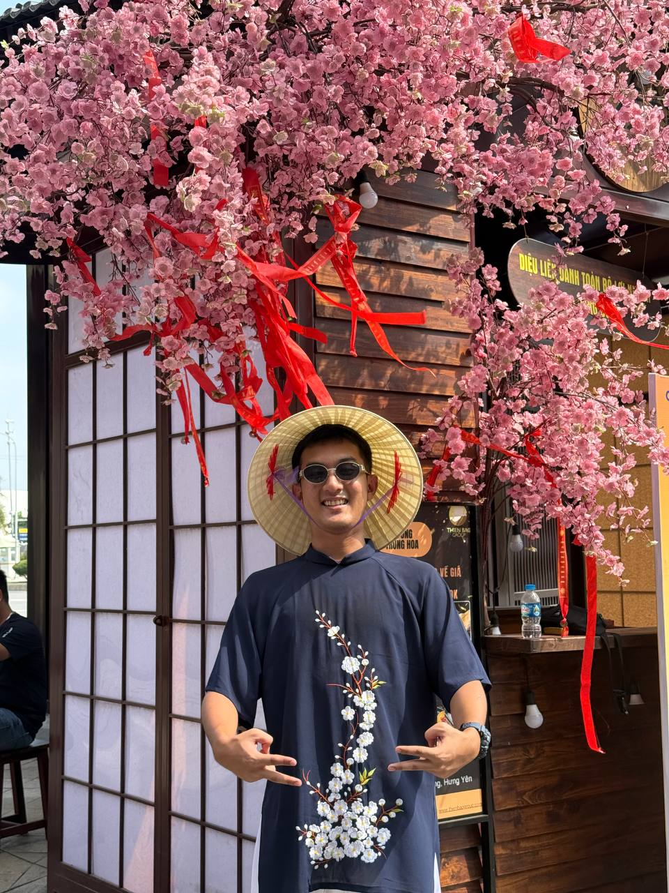

Network Engineer
Hello, I’m Min Thuya Kyaw
Skilled in designing, configuring, and troubleshooting networks. Experienced with routers, switches, firewalls, and protocols (TCP/IP, OSPF, BGP). Strong in network security, performance optimization, and problem-solving.
Download CV
